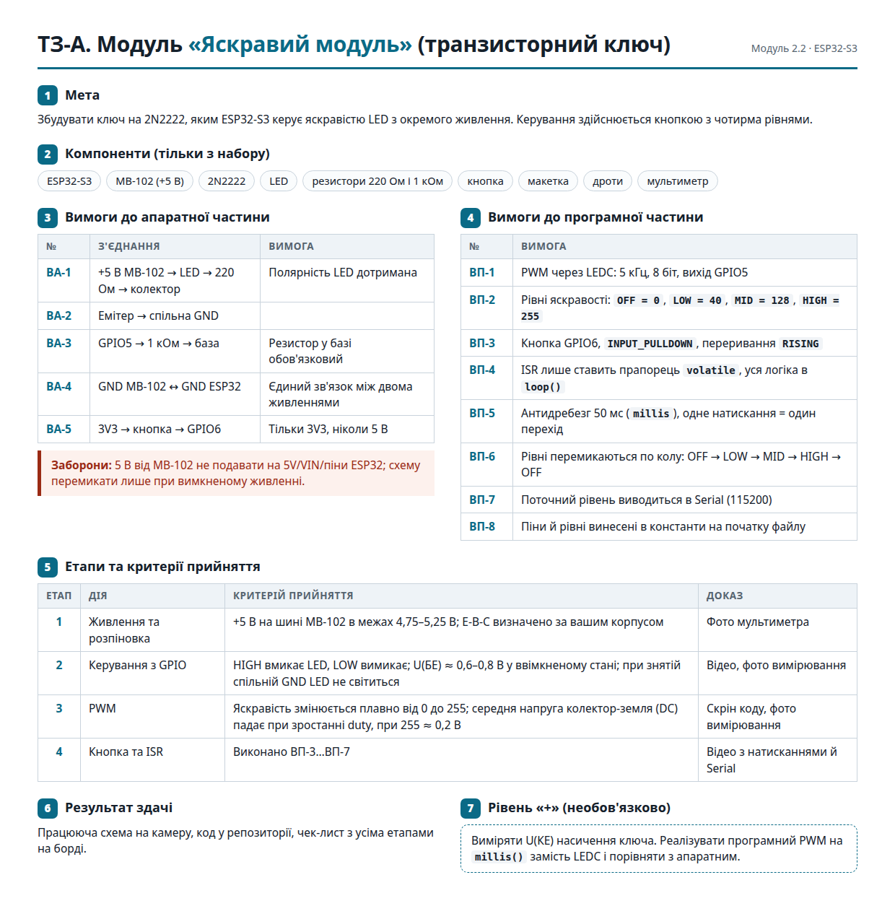
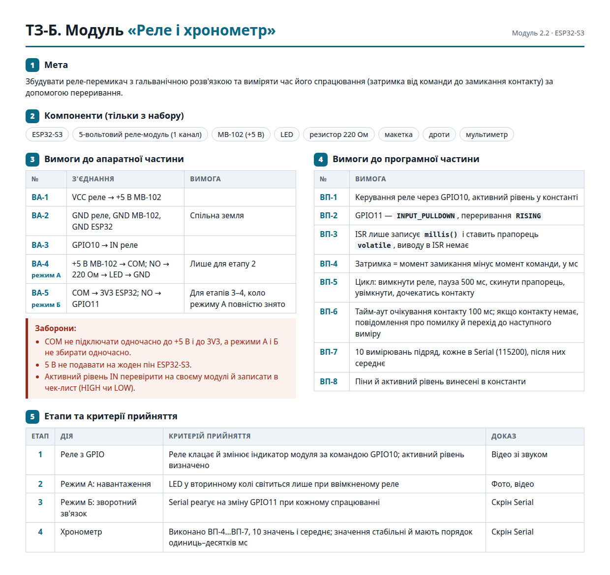
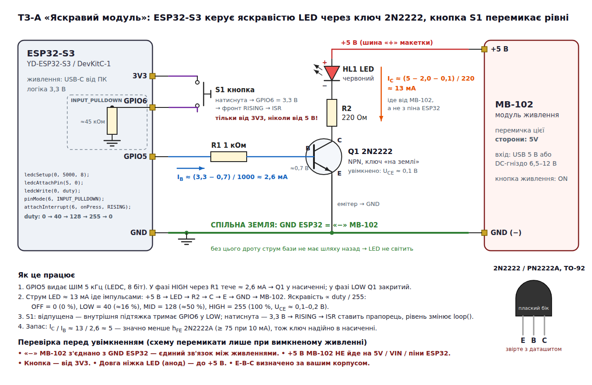
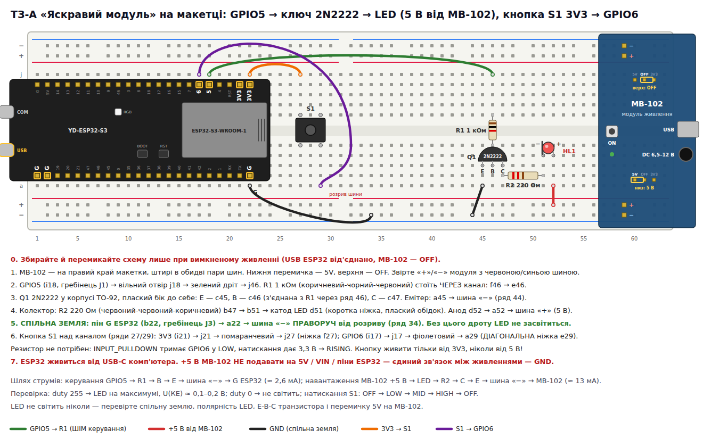

1Розминка: що ви вже знаєте
Метапригадати схему «Сутінкового перемикача» [33], бо сьогодні ми її розширимо.
19:05 · 8 хв. Розминка індивідуально, потім розбір. 3 питання про «Сутінковий перемикач» (W0). Викликати 2–3 людей.
У «Сутінковому перемикачі» пін GPIO2 керував модулем реле через транзистор BC547B. Між піном і базою стояв резистор R3 = 10 кОм. Струм бази: (3,3 − 0,7) / 10 кОм ≈ 0,26 мА [33]. Транзистор там лише узгоджував рівні 3,3 В і 5 В. Котушку реле (≈ 70 мА) вмикав транзистор усередині модуля.
W0Розминка · 3 питання
2Проблема: чому двигун не можна підключити прямо до піна
Метапорівняти струм навантаження зі струмом, який може дати пін ESP32-S3, і зробити висновок, чи потрібен ключ.
19:13 · 10 хв · Демо 1 — струм мотора (POE).
- Мотор «130» на лабораторному блоці живлення (обмеження струму ~1 А), амперметр послідовно, щуп у гнізді 10 A, не mA.
- Питання: «Скільки мА бере мотор? А якщо притримати вал?» Кожен записує прогноз.
- Показати холостий хід (очікувано 70–150 мА [12][13]).
- Обережно притримайте вал на 1–2 с (очікувано 0,5–2 А, залежно від мотора). Якщо спрацює обмеження струму, амперметр покаже саме межу блока (~1 А).
- Пояснення: зворотна ЕРС; порівняти з 20 мА піна (W1).
Уявлення «пін виштовхує фіксований струм»: спитайте «Пін 3,3 В на обмотку 10 Ом — який струм намагатиметься текти?» (330 мА). Виправлення: пін задає напругу, струм — I = U/R; пін просідає [9].
Пін GPIO — це вихід для сигналу, а не для живлення.
Пін задає напругу, а струм бере навантаження (I = U / R). Пін не «виштовхує» фіксований струм. Але пін слабкий: якщо навантаження хоче забагато струму, напруга на піні просідає.
Скільки може пін ESP32-S3 [9][10][11]:
- За замовчуванням драйвер піна дає приблизно 20 мА (на GPIO17/18 — 10 мА).
- У найсильнішому режимі (drive strength 3) — до ~40 мА. Але при цьому напруга на піні вже падає з 3,3 В до 2,64 В. Це умова вимірювання, а не робочий запас.
- Струм у пін (на землю) — ~28 мА.
- Окремого «абсолютного максимуму» на один пін у даташиті немає. Сумарно на всі піни — не більше 1500 мА.
Практичне правило: плануйте до 10–20 мА на пін. Цього вистачить на світлодіод або базу транзистора, але не на двигун.
Скільки бере навантаження:
- Котушка реле SRD-05VDC-SL-C на 5 В: 71 мА (варіант 70 Ом) або 89 мА (варіант 55 Ом) [23]. Це у 3,5–4,5 раза більше за 20 мА.
- Маленький моторчик типу «130» на холостому ходу: 70–150 мА [12][13].
- Той самий моторчик у момент старту або коли вал зупинено рукою (stall, «стоп»): 0,5–2,1 А, залежно від моделі [12][13].
Чому старт — найважчий момент? Поки вал стоїть, двигун ще не виробляє зворотної електрорушійної сили — зворотної ЕРС (back EMF). Це напруга, яку двигун генерує, коли обертається. Ця напруга протидіє живленню і зменшує струм. На старті її ще немає, тому струм найбільший [24].
Що буде, якщо все ж підключити моторчик прямо до піна [9]:
- Найчастіше він просто не закрутиться. Пін не дасть сотні міліампер, і напруга на ньому просяде.
- Пін працює далеко за межами норми і гріється.
- Двигун «стріляє» викидами напруги прямо в мікросхему.
- Якщо двигун живиться від тієї ж плати, напруга живлення просідає, і плата перезавантажується.
Чип не обов'язково згорить миттєво. Але ризик зіпсувати пін або весь чип реальний, тому так не робимо ніколи.
W1Бюджет піна
шкала логарифмічна: 1 мА … 3 АВиберіть навантаження.
Drive strength 0/1/2/3 → ~5/10/20/40 мА [10][11]. Рівень 2 (~20 мА) — за замовчуванням; на GPIO17/18 за замовчуванням лише ~10 мА [9]. LED через 220 Ом — діапазон, бо падіння напруги залежить від кольору LED.
Котушка реле бере 71 мА. Пін дає ~20 мА. Чи можна підключити котушку прямо до піна?
Відповідь: ні. 71 мА — у 3,5 раза більше за 20 мА [23][9]. Потрібен ключ (транзистор). До того ж котушка — індуктивність, і при вимкненні вона дасть викид напруги прямо в пін.
3Активні та пасивні компоненти
Метарозрізнити активний і пасивний компонент за критерієм підсилення потужності; знати, що робить кожен базовий компонент.
19:23 · 10 хв · у парах. Сортування W2. Обговорити реле й діод: «Активний чи пасивний? Чому?» Критерій — підсилення потужності.
Стежте за уявленням «транзистор створює енергію». Виявити: «Звідки енергія мотора?» Виправити: енергія — з джерела мотора [3]. Резервне питання: «Діод — активний чи пасивний?» (джерела розходяться; критерій — підсилення [2][3]).
Усі деталі в електроніці ділять на групи. Головне питання одне: чи може деталь за допомогою малого сигналу керувати великим потоком енергії?
Пасивний компонент (passive component) не може підсилити сигнал. Тобто він не дає на виході більше потужності, ніж отримав. Він лише розсіює енергію або тимчасово накопичує її і потім віддає. Додаткового живлення йому не треба [1][2].
- Резистор (resistor) обмежує струм. Він ніби «гальмує» рух електронів. Енергія при цьому стає теплом: P = I²·R. Тому кожен резистор має допустиму потужність, наприклад 0,25 Вт [4].
- Конденсатор (capacitor) накопичує електричний заряд. Енергія зберігається в електричному полі між обкладками: W = ½·C·U² [5]. Це маленький резервуар (буфер): він швидко заряджається й швидко віддає заряд. Це не акумулятор: енергії в ньому дуже мало, і під час розряду його напруга падає [5].
- Котушка індуктивності (inductor) накопичує енергію в магнітному полі, поки через неї тече струм: W = ½·L·I² [6]. Котушка «не любить» різких змін струму. Якщо струм раптово обірвати, вона створить сплеск напруги, щоб струм тік далі [6]. Запам'ятайте це: у розділі 6 саме це пояснить, навіщо потрібен захисний діод.
Активний компонент (active component) може малим сигналом керувати великим потоком енергії: підсилювати його або вмикати й вимикати. Своєї енергії він не має. Енергію дає джерело живлення схеми, а активний компонент лише дозує, скільки її піде в навантаження [3][2].
- Транзистор (transistor): малий струм бази керує великим струмом колектор–емітер. Він може бути ключем (повністю відкритий або закритий) або підсилювачем [7].
- Мікроконтролер (ESP32-S3) складається з мільйонів транзисторів, тому теж активний [3].
Діод (diode) пропускає струм лише в один бік, як зворотний клапан. Тут джерела розходяться [2][3]. Підсилювати діод не вміє, тож за правилом підсилення він пасивний. Але він напівпровідниковий, тому в багатьох підручниках і каталогах магазинів його ставлять до активних (напівпровідникових) компонентів. Для курсу запам'ятайте так: діод — напівпровідниковий компонент, який не підсилює сигнал.
Світлодіод (LED) — це діод, який світиться. Його класифікують так само, як звичайний діод [3].
Реле (relay) — третя група, електромеханічна. Котушка-електромагніт механічно замикає контакти [3]. Мала потужність у котушці перемикає велику потужність на контактах. Тому за функцією реле — ключ, як транзистор [2].
Аналогія з краном. Транзистор схожий на кран: мала сила на ручці керує великим потоком води. Межа аналогії: кран не пояснює, чому на переході база–емітер приблизно 0,7 В і навіщо потрібен резистор.
Звідки енергія
Звідки береться енергія, яка крутить двигун у схемі з транзистором? а) з транзистора; б) з піна ESP32-S3; в) з джерела живлення двигуна.
Відповідь: в). Транзистор не має власної енергії, він лише «дозує» енергію з джерела живлення двигуна [3]. Пін ESP32-S3 дає тільки малий струм бази. Якщо ви обрали а) — це поширена помилка «активний = має своє живлення».
W2Сортувальник «Активний / Пасивний / Залежить»
перетягніть картку або натисніть її, а потім кошикЗ клавіатури: Tab до картки → Enter (вибрати) → Tab до назви кошика → Enter.
4Транзистор як електронний ключ
Метазібрати NPN-ключ на «мінусі» (low-side), розрахувати RБ і перевірити, чи транзистор у насиченні.
19:33 · 17 хв · розв'язаний приклад → з пропуском → самостійно. На дошці вголос — приклад А. Студенти добивають Б. Індивідуально — В: «Чи впорається BC547B?» Конфлікт: IБ ≈ 25–50 мА > 20 мА → MOSFET. Віджети W3, W4, W5.
19:50 · 8 хв · ConcepTest 1 (голосування → пари 2 хв → повторне голосування): «Транзистор уже в насиченні. Зменшили RБ з 1 кОм до 100 Ом. Двигун закрутиться швидше?» Відповідь: ні, зайвий струм бази лише навантажує пін (≈ 24 мА > 20 мА). Це питання «Перевірте себе» цього розділу. Цим же питанням ловимо уявлення «більше струму бази — завжди краще».
Резервне питання: «Чи можна поставити NPN у "плюс" (high-side)? Що зміниться?» (емітер «підніметься» разом з навантаженням, 3,3 В на базі вже не вистачить відкрити його повністю — привід для PNP/P-MOSFET або драйвера).
4.1Як підключати
Ми використовуємо біполярний транзистор (BJT) типу NPN [7]. Три виводи:
- База (base) — керування. Сюди через резистор RБ іде сигнал з піна ESP32-S3.
- Колектор (collector) — сюди приходить струм навантаження: «+» живлення двигуна → двигун → колектор.
- Емітер (emitter) — з'єднаний із землею GND.
Схема ключа на «мінусі» (low-side switch) — праворуч і в живому симуляторі W3 нижче. ESP32-S3 віддає лише невеликий струм бази (зазвичай 0,3–3 мА). Великий струм двигуна тече тільки колом «живлення → двигун → колектор → емітер → GND» [7]. Тобто пін віддає лише одиниці міліампер, а не сотні.
+U_дв ──── навантаження ──── колектор
│ NPN
пін ESP32-S3 ── R_Б ──────── база
│
емітер ── GND (спільна)
4.2Резистор бази обов'язковий
Перехід база–емітер поводиться як діод: на ньому ≈ 0,7 В [14]. Струм бази:
При великих струмах колектора напруга база–емітер зростає до ~0,9 В, тому струм бази трохи менший [14]. Обидва струми (0,26 і 2,6 мА) безпечні для піна.
Що буде без RБ. Перехід база–емітер «притискає» пін до ~0,7 В. Пін віддає стільки струму, скільки фізично може (десятки мА), і працює перевантаженим [9]. Струм бази тоді задає слабкість піна, а не ви. Пін може деградувати або вийти з ладу. Резистор RБ задає струм саме таким, як ви розрахували.
4.3Насичення: ключ має бути відкритий «до упору»
Транзистор має три режими [7]:
- Відсічка (cut-off): IБ = 0, транзистор закритий, струму немає.
- Активний (лінійний) режим: транзистор відкритий частково. На ньому падає кілька вольт, і він гріється: P = UКЕ · IК.
- Насичення (saturation): транзистор відкритий повністю. На ньому падає лише ~0,1–0,3 В. Це і є режим ключа.
Правило насичення: струм бази має бути щонайменше 1/20 струму колектора, а краще 1/10 [14][15]. Саме при такому співвідношенні в даташитах гарантують малу напругу UКЕ(нас) (VCE(sat)). Коефіцієнт підсилення за струмом hFE (у скільки разів IК більший за IБ в активному режимі) з даташита для ключа не годиться: він виміряний в активному режимі.
Що це означає на практиці (IБ з 3,3 В) [14][15]:
| RБ | IБ | Гарантоване насичення для IК до |
|---|---|---|
| 10 кОм | 0,26 мА | 2,6–5,2 мА |
| 1 кОм | 2,6 мА | 26–52 мА |
| — | 25–50 мА (неможливо з піна) | 500 мА |
Тому BC547 з 10 кОм не може керувати двигуном. Навіть в активному режимі струм колектора обмежиться hFE · IБ ≈ 0,26 мА × (200…450) = 52…117 мА [14]. Двигун на 500 мА вимагав би IБ ≈ 25–50 мА, а пін стільки не дасть. До того ж BC547 витримує лише 100 мА [14]. Транзистор лишиться напіввідкритим, на ньому впаде кілька вольт, і він перегріється.
Чому ж тоді 10 кОм працювали в «Сутінковому перемикачі»? Там BC547B комутував лише ~4,7 мА (вхід модуля), а не котушку. Примусове β (відношення IК / IБ, яке ми самі задаємо резистором) ≈ 18, тобто транзистор гарантовано в насиченні [33]. Правило те саме.
W3Живий NPN-ключ
відсічкаСпробуйте: 1) Котушка реле + BC547B: знайдіть найбільший RБ, при якому індикатор зелений. 2) Мотор + BC547B: чи є хоч один RБ, що дає зелений і не перевантажує пін? 3) Перемкніть на AO3400A. Зверніть увагу на струм піна і нагрів.
Як рахується
BJT: IБ = (3,3 − UБЕ)/RБ; UБЕ = 0,7 В (0,9 В при IК > 50 мА) [14]. Потрібний IК = (Uдв − UКЕ(нас)) / Rнав.
Якщо IБ ≥ IК/20 → «насичення гарантоване» (зелений). Для P2N2222A понад 150 мА поріг — IК/10: саме за такої умови даташит задає UКЕ(нас) при 500 мА. UКЕ(нас): BC547B 0,2 В тип. при 100 мА [14]; P2N2222A ≤ 0,3 В при 150 мА і ≤ 1,0 В при 500 мА, між ними — лінійна інтерполяція [15].
Якщо IБ менший за цей поріг, але hFE,min·IБ ≥ IК → «ймовірно насичення, без гарантії» (жовтий). hFE,min: BC547B 200 [14]; P2N2222A 50 при 150 мА, 40 при 500 мА [15].
Інакше → «активний режим» (червоний): IК = hFE·IБ, UКЕ = Uдв − IК·Rнав, P = UКЕ·IК.
TIP120: UБЕ ≈ 1,4 В (два переходи), hFE ≥ 1000, UКЕ ≈ 1 В при 0,5 А (типове з графіка) [17].
AO3400A: затвор через 100–470 Ом, RDS(on) ≤ 48 мОм при UЗВ = 2,5 В [18]; UСВ = I·RDS(on). Струм затвора тече лише короткий час, поки затвор заряджається.
Тривоги: IК > IК,max (BC547B 100 мА [14]; P2N2222A 600 мА [15]); струм піна > 20 мА; активний режим з P > Pmax (BC547B 500 мВт [14]; P2N2222A 625 мВт [15]).
Мотор змодельовано як резистор 12 Ом. Це правда лише для зупиненого вала. Коли вал крутиться, зворотна ЕРС зменшує струм до 70–150 мА [12][13]. Стрічку змодельовано як навантаження, що бере 20 мА від 5 В.
4.4Розв'язаний приклад → приклад із пропуском → самостійна задача
Покроковий метод:
- Знайдіть струм навантаження IК.
- Потрібний струм бази: IБ = IК / 10 (з запасом) … IК / 20 (мінімум за даташитом).
- Перевірте: IБ ≤ ~20 мА (бюджет піна)? IК ≤ IК,max транзистора?
- RБ = (3,3 − UБЕ) / IБ. Округліть вниз до стандартного номіналу з ряду E12 (1,0; 1,2; 1,5; 1,8; 2,2; 2,7; 3,3; 3,9; 4,7; 5,6; 6,8; 8,2 і ці ж числа ×10, ×100…).
W4Калькулятор RБ: від прикладу до самостійної задачі
Приклад А: світлодіодна стрічка 20 мА на BC547B.
- Струм навантаженняIК = 20 мА.
- Потрібний струм базиIБ = 20 / 10 = 2 мА.
- Перевірки2 мА ≤ 20 мА ✓; 20 мА ≤ 100 мА (BC547B) ✓.
- РезисторRБ = (3,3 − 0,7) / 2 мА = 1,3 кОм → беремо 1,2 кОм (IБ ≈ 2,2 мА).
Приклад Б: котушка реле 71,4 мА на BC547B.
- Струм навантаженняIК = 71,4 мА [23].
- Потрібний струм базиIБ = 71,4 / 20 ≈ 3,6 мА (мінімум) … 71,4 / 10 ≈ 7,1 мА.
- Перевірки3,6–7,1 мА ≤ 20 мА ✓; 71,4 мА ≤ 100 мА ✓ (але запас невеликий: для котушки 89 мА BC547 уже біля межі, у 2N2222A запас більший [14][15]).
- Ваш крок: беремо IБ ≈ 4 мА (трохи більше за мінімум IК/20; при ~70 мА UБЕ ≈ 0,8 В [14]). RБ = (3,3 − 0,8) / 4 мА = ?
Задача В: моторчик, струм на старті 500 мА, транзистор BC547B. Порахуйте самі: введіть IК, а калькулятор перевірить бюджет піна і межу транзистора.
- Потрібний струм бази—
- Бюджет піна (~20 мА)—
- Межа BC547B (100 мА)—
Відповіді: Б — ≈ 625 Ом → беремо 560 Ом (найближчий менший номінал E12; IБ ≈ 4,5 мА). 680 Ом теж дає ≥ 3,6 мА, але запас мінімальний; варіант IК/10: (3,3 − 0,8) / 7,1 мА ≈ 350 Ом → 330 Ом. 10 кОм тут не підходять ніколи. В — IБ = 25–50 мА — більше за бюджет піна; IК = 500 мА — у 5 разів більше за 100 мА BC547. Не підходить. Потрібен логічний MOSFET — див. розділ 5.
Транзистор уже в насиченні. Ви зменшили RБ з 1 кОм до 100 Ом. Двигун закрутиться швидше?
Відповідь: ні. У насиченні транзистор уже відкритий повністю, UКЕ і так ~0,1–0,3 В. Зайвий струм бази тільки навантажує пін: (3,3 − 0,9) / 100 Ом ≈ 24 мА — це вже більше за 20 мА типового піна [9].
5Як вибрати ключ
Метавибрати ключ для 70 мА, ~200 мА і 0,5–2 А та обґрунтувати вибір цифрами з даташита.
Входить у блок 19:33 (W5). Уявлення «IRLZ44N "логічний" = відкритий від 3,3 В» виявляємо питанням 8 тесту; виправлення — дивитися RDS(on) при 2,5 В [18][21].
Головне обмеження — не тільки максимальний струм транзистора, а й струм бази, який може дати пін (~20 мА).
| Ключ | Межа струму | Від піна ESP32-S3 реально | На ключі падає / гріється | Коли брати |
|---|---|---|---|---|
| BC547B (NPN) | 100 мА [14] | до ~100 мА (з RБ 560 Ом–1 кОм) | 0,2 В тип. при 100 мА → 20–60 мВт [14] | сигнали, LED, котушка реле 71 мА |
| 2N2222A / P2N2222A (NPN) | 600 мА — це межа [15] | ~100–200 мА, RБ 270–470 Ом: (3,3 − 0,9)/330 Ом ≈ 7 мА [15] | ≤ 0,3 В при 150 мА → ≤ 45 мВт; при 500 мА потрібно 50 мА бази [15] | реле, коротка LED-стрічка |
| S8050 / SS8050 (NPN) | від 0,5 А до 1,5 А залежно від виробника [16] | ~100–200 мА, як 2N2222 | — | перевіряйте даташит саме вашої деталі |
| TIP120 (Дарлінгтон) | 5 А [17] | 0,5 А і більше, через ~1 кОм (hFE ≥ 1000) | ~1–2 В → 0,5–1 Вт при 0,5 А [17] | коли MOSFET немає під рукою |
| AO3400A (логічний N-MOSFET) | 5,7 А [18] | так, RDS(on) ≤ 48 мОм гарантовано при 2,5 В | ≤ 12 мВт при 0,5 А [18] | двигун (SMD, потрібна перехідна плата) |
| IRLML6344 (логічний N-MOSFET) | 5 А [19] | так, ≤ 37 мОм при 2,5 В | ≤ 9,3 мВт при 0,5 А [19] | двигун (SMD) |
| IRLB8721, IRLZ44N (N-MOSFET, TO-220) | великий | зазвичай працюють, але не гарантовано: RDS(on) описаний лише при 4–4,5 В і вище [20][21] | — | краще з драйвером або від 5 В |
| ULN2003A (7 ключів Дарлінгтона) | 500 мА на канал [22] | так, прямо від 3,3 В; резистори і діоди вже всередині | ~1 В → 5-вольтове реле отримає ~4 В (поріг спрацювання 3,75 В — запас малий) [22][23] | кілька реле, кроковий двигун |
MOSFET-ключ — правила обв'язки [8][55]:
- Між піном і затвором — резистор ~100–470 Ом. Він обмежує ривок струму, коли затвор заряджається.
- Між затвором і GND — резистор 10–100 кОм. Поки ESP32-S3 перезавантажується і пін «висить у повітрі», цей резистор тримає транзистор закритим, і двигун не смикається.
- Схема та сама: стік (drain) замість колектора, витік (source) замість емітера, затвор (gate) замість бази. Діод паралельно двигуну потрібен так само.
ULN2003A: вивід COM підключіть до «+» живлення котушок, інакше вбудовані діоди не працюють [22].
Обв'язка логічного MOSFET
2N2222A витримує 600 мА. Чи можна ним від піна ESP32-S3 надійно комутувати двигун на 500 мА?
Відповідь: ні. 600 мА — це межа, а не робочий режим. Для гарантованого UКЕ(нас) ≤ 1,0 В при 500 мА даташит вимагає 50 мА бази [15]. Пін дає ~20 мА. Крім того, 1,0 В × 0,5 А = 0,5 Вт — близько до межі 625 мВт. Беріть логічний MOSFET.
W5Підберіть ключ
три умови: струм ≤ межі · керування ≤ 20 мА · втрати допустиміСпробуйте: для кожного навантаження спершу виберіть BC547B і подивіться, яка умова не виконується. Потім знайдіть ключ, у якого всі три умови зелені.
Шкала логарифмічна: кожна поділка — у 10 разів більше. Значення — з даташитів [17][15][18][19]; для MOSFET це верхня межа.
6Захист: діод, конденсатори, спільна земля
Двигун — це не лампочка. Усередині — котушка (індуктивність), і вона має «характер» [6].
6АЗахисний діод та індуктивний викид
Метапояснити, звідки береться викид при вимкненні, правильно поставити діод і вибрати його тип.
20:13 · 15 хв · Демо 2 — викид без діода (лише викладач). Демо 3 (brownout) — у цьому ж блоці, розділ 6Б.
- Запасний транзистор (2N2222A), невисока напруга (5–6 В), навантаження — котушка реле.
- Щуп осцилографа на колекторі, земля щупа на емітер.
- Без діода: кілька вимкнень, пік далеко над живленням. Не повторювати багато разів.
- Додати 1N4148/1N4007 смужкою до «+»: пік зникає, UК ≈ Uживл + 0,7…1 В [24].
- Питання: «Куди подівся струм котушки?» → W6.
Уявлення, за якими стежити: діод «поглинає» або «блокує» сплеск (виявити: «Куди подівся струм?»; виправити: W6 — струм циркулює і згасає); «зворотна ЕРС = викид при вимкненні» (термінологія LMS; це два різні явища [24]).
Поки струм тече, у котушці двигуна чи реле запасена енергія магнітного поля: W = ½·L·I² [6]. Миттєво зникнути вона не може. Котушка «тримає» струм.
Коли транзистор різко обриває струм, котушка сама створює напругу U = −L·di/dt [6][24]. Що швидше обірвали струм, то вища напруга. Це індуктивний викид (inductive kickback, flyback), або викид самоіндукції.
Без захисту викид піднімає напругу на колекторі до десятків і сотень вольт, далеко вище за напругу живлення. Приклад вимірювання: на котушці соленоїда 24 В без діода — близько −300 В (мінус означає, що напруга на котушці «перевернулася»). На колекторі це сотні вольт вище за землю й за живлення [24]. Обмежує викид тільки пробій транзистора. Тому транзистор і гине, іноді з першого разу [24].
Не плутайте. У LMS цей викид названо «зворотна ЕРС». Зворотна ЕРС (back EMF) двигуна — це інша річ: напруга, яку двигун генерує, коли обертається. Вона пропорційна швидкості і протидіє живленню [24]. Саме через неї робочий струм менший за стартовий (розділ 2).
Рішення — захисний діод (flyback diode) [7][24]:
- Ставимо діод паралельно двигуну чи котушці.
- Катод (смужка) — до «+» живлення двигуна.
- Поки транзистор відкритий, діод закритий і не заважає.
- Щойно транзистор закрився, струм котушки не зникає. Він тече далі в тому самому напрямку по колу «котушка → діод → котушка» і згасає за мілісекунди.
- Напруга на колекторі тоді лише трохи вища за напругу живлення: +0,7…1 В, а не сотні вольт. (Вимірювання з 1N4007 на тому ж соленоїді: близько −1,4 В на котушці [24].)
- Ставте діод якомога ближче до виводів двигуна, щоб коло було коротким (Pololu радить тримати дроти мотора якомога коротшими [25]).
Діод нічого не «поглинає» і не «блокує». Він дає струму котушки дорогу, тому викид просто не виникає.
Якщо діод поставити навпаки (смужкою до GND), він закоротить живлення двигуна щоразу, коли транзистор відкриється.
W6Осцилограф на колекторі: з діодом і без
транзистор закритийСпробуйте: увімкніть і вимкніть з діодом, потім без нього. Порівняйте висоту піку CH1 і форму струму CH2. Потім спробуйте «Перевернути діод».
■ CH1 UК, 2 В/под. · ■ CH2 Iкотушки (відносний) · час — мілісекунди
Виберіть режим діода і натисніть «Увімкнути транзистор».
Режим «з діодом»: UК піднімається лише до Uдв + 0,7…1 В ≈ 6,7–7 В [24]. Режим «без діода» — ілюстрація: точна висота залежить від котушки і швидкості вимикання; еталон — соленоїд 24 В без діода: викид ≈ 300 В (на котушці −300 В відносно робочої полярності; на колекторі — сотні вольт вище за живлення) [24]. Стабілітрон у прикладі — 8,2 В (як у вимірюванні [53]): UК ≈ Uдв + Uz + 0,7 В. Масштаб часу умовний.
Який діод брати [46][47][48][49]:
- маленьке реле (до ~100 мА): 1N4148 (100 В, 150 мА середній, 500 мА імпульсний);
- двигун, просте ввімкнення/вимкнення: 1N4007 (1 А, 1000 В);
- двигун із ШІМ: швидкий діод — Шотткі 1N5819 (1 А, 40 В) або UF4007 (1 А, ≤ 75 нс).
Правило: діод має витримувати струм двигуна в момент вимкнення (для мотора — аж до струму зупиненого вала), а його зворотна напруга має бути більшою за напругу живлення [24].
Нюанси для реле. Простий діод уповільнює відпускання реле: струм згасає довше, і контакти розмикаються із запізненням [24][29]. Якщо треба швидше, послідовно з діодом ставлять стабілітрон (зенер) або TVS-діод. Тоді напруга на транзисторі буде вищою (Uживл + Uz), і транзистор має це витримати [29]. Для наших маленьких реле простого діода досить. Діод працює лише на котушках постійного струму; котушкам змінного струму потрібен RC-ланцюжок [7].
Шум щіток. Щітки колекторного двигуна іскрять і створюють високочастотні завади. Pololu наводить приклад: наведені викиди до 20 В у сусідніх колах [25]. Тому прямо на виводи двигуна паяють керамічний конденсатор 100 нФ (0,1 мкФ) [25]. Діод і цей конденсатор виконують різну роботу, потрібні обидва.
Побічний ефект: діод на двигуні трохи гальмує його після вимкнення, бо струм циркулює через обмотку [24].
Куди дівається струм котушки в момент, коли транзистор закрився, якщо діод стоїть правильно?
Він тече далі в тому самому напрямку по колу «котушка → діод → котушка» і за мілісекунди згасає. Енергія перетворюється на тепло в опорі обмотки і в діоді [24]. Тому напруга на колекторі лише на 0,7–1 В вища за живлення.
6БКонденсатори і просідання живлення (brownout)
Метапояснити, навіщо великий електролітичний конденсатор і 100 нФ, і розпізнати перезавантаження через просідання живлення.
Демо 3 — brownout (у блоці 20:13; якщо brownout не відтворився, одразу W7).
- Скажіть уголос: «Це заборонений спосіб. Я показую його один раз, щоб ви побачили наслідок. Самі так не робіть (правило 1).» Живіть плату через USB-хаб із власним живленням або павербанк, не напряму від порту ноутбука.
- Мотор живиться від піна 5V плати (коротко!), ESP32-S3 у Serial Monitor.
- Старт мотора →
Brownout detector was triggeredі перезавантаження (залежить від мотора й USB-порту; якщо не відтворюється, показати W7) [27][28]. - Перенести мотор на окремі 4×AA зі спільною GND → перезавантажень немає.
Уявлення «конденсатор = батарейка»: спитайте «Чи прокрутить 470 мкФ мотор 10 с?» → ≈ 8,5 мДж → ~14 мс при 0,6 Вт [5]. Резервне питання: «Чому "Крона" 9 В погано крутить мотор?» (внутрішній опір, відео про ЕРС).
На старті двигун бере струм у рази більший за робочий (розділ 2). Напруга живлення на мить просідає [25].
Великий електролітичний конденсатор (bulk capacitor) ставимо біля двигуна, між «+» і «−» його живлення. Ємність — 100…1000 мкФ [25]. У ці миті він віддає заряд і згладжує провал.
Правила для електроліта [25]:
- Він полярний: мінус (смужка на корпусі) — до GND. Навпаки — гріється і може здутися або луснути.
- Номінальна напруга (написана на корпусі) — щонайменше вдвічі більша за напругу живлення. Наприклад, 16 В для 6 В. (Це практичне правило Pololu; виробники конденсаторів такого числа не дають.)
Біля ESP32-S3 — свій керамічний 100 нФ на живленні. Espressif рекомендує 0,1 мкФ біля виводів живлення, щонайменше 10 мкФ на вході живлення і джерело на 500 мА або більше [26]. На готовій платі це вже є.
Важливо. Якщо двигун живиться окремо від ESP32-S3, конденсатор біля двигуна береже насамперед лінію двигуна. ESP32-S3 захищають окреме живлення і правильна спільна земля (розділ 6В).
Конденсатор — не батарейка. Приклад: 470 мкФ при 6 В зберігають W = ½ · 470·10⁻⁶ · 6² ≈ 8,5 мДж [5]. Мотор, що бере 0,1 А при 6 В (0,6 Вт), витратить цю енергію приблизно за 14 мс.
Brownout — захист ESP32-S3 від просідання. ESP32-S3 працює від 3,0–3,6 В (рекомендовано 3,3 В) [26]. Плата отримує 5 В від USB, але стабілізатор на ній робить 3,3 В для чипа. Тому «одиниця» на GPIO ≈ 3,3 В, а не 5 В [26].
Якщо напруга падає нижче ~2,44 В (типовий поріг у ESP-IDF), вбудований детектор brownout перезапускає чип [27][28]. У Serial Monitor тоді видно:
Brownout detector was triggered
Поріг — оцінка, він трохи різний у різних чипів [27]. Але вже нижче 3,0 В чип працює поза нормою.
Ознака поганого живлення: плата перезавантажується щоразу, коли стартує двигун. Шукайте проблему в живленні та землі, а не в коді.
Чому не «Крона» 9 В? У неї великий внутрішній опір: під навантаженням напруга сильно просідає (так само, як батарейка 1,5 В показує ~1 В у відео про ЕРС, див. «Матеріали»). Беріть 4×AA або лабораторний блок живлення.
W7Старт двигуна і brownout
плата працюєСпробуйте: порівняйте три запуски: від піна 5V без конденсаторів; від піна 5V з 470 мкФ; від 4×AA. Коли графік опускається нижче 2,44 В?
Глибина провалів — ілюстрація. Справжні значення залежать від джерела, проводів і двигуна. Пороги 3,0 В і 2,44 В — з документації Espressif [26][27].
Двигун живиться від окремих 4×AA, ESP32-S3 — від USB. Плата не перезавантажується. Чи потрібен конденсатор біля двигуна?
Відповідь: так. Він згладжує провали на лінії двигуна і разом з 100 нФ зменшує завади, що йдуть по проводах і спільній землі [25]. Але стабільність самої ESP32-S3 тут забезпечує насамперед окреме живлення.
6ВСпільна земля (common ground, GND)
Метапояснити спільну землю через замкнене коло струму бази; з'єднати землі правильно.
Уявлення «спільна земля = з'єднати джерела»: виявляється на W8 («З'єднати плюси»). Виправлення: лише мінуси, «зірка» [32]. Резервне питання: «Чим реле відрізняється від транзистора як ключ?» (гальванічна розв'язка, швидкість, брязкіт → ДЗ 1).
У нас два джерела: USB для ESP32-S3 і окреме джерело для двигуна (наприклад, 4×AA = 6 В).
Правило: їхні мінуси (GND) обов'язково з'єднуємо разом [31][33].
Чому. Струм бази виходить з піна ESP32-S3, проходить через RБ і перехід база–емітер. Емітер з'єднаний із мінусом джерела двигуна. Звідти струм має повернутися в GND ESP32-S3. Якщо мінуси не з'єднані, коло розірване. Струм бази дорівнює нулю, і транзистор не відкривається [31][33].
Інший бік тієї самої думки: напруга завжди вимірюється між двома точками. Спільна земля і є тією спільною точкою відліку [31].
Як з'єднувати правильно [32][33]:
- З'єднуйте тільки мінуси. Плюси двох джерел не з'єднуйте ніколи: у них різна напруга (6 В і 5 В). Струм потече з батарей просто в USB-порт комп'ютера і може його пошкодити.
- З'єднуйте землі в одній точці («зірка») біля емітера транзистора або мінуса джерела двигуна.
- Великий струм двигуна не повинен текти через тонкий GND-дріт ESP32-S3 чи сигнальну шину макетки. Інакше «земля» ESP32-S3 зміщується, і з'являється шум у логіці та АЦП.
Виняток: якщо кола розділені гальванічно, тобто між ними немає електричного з'єднання (контакти реле, оптопара), землі можна не з'єднувати. З транзисторним ключем — з'єднувати обов'язково [32].
W8Замкнене коло: спільна земля
мотор крутитьсяСпробуйте: приберіть дріт GND–GND, потім поверніть його і перемкніть «через GND ESP32-S3». Стежте за рівнем GND ESP32.
Ви забули з'єднати GND двох джерел. Пін у HIGH. Яким буде струм бази?
Відповідь: нуль. Струму бази нікуди повернутися до ESP32-S3, коло розірване [31][33]. Транзистор закритий, двигун стоїть.
7Безпека на макетці
19:58 · 5 хв · Інструктаж з безпеки (перед перервою). Розділ 7 дослівно. Двоє студентів повторюють по одному правилу своїми словами. Наголосити: діод і електроліт — перевірка орієнтації до ввімкнення; живлення мотора — останнім увімкнути, першим вимкнути; Li-ion — без коротких замикань; 230 В — ніколи. Демо без діода — тільки викладач.
Прочитайте перед збиранням. Порушення цих правил — це спалений пін, вибухлий конденсатор або опік.
- Ніколи не підключайте двигун, котушку реле чи лампу прямо до GPIO, 3V3 або 5V плати.
- Двигун живиться від окремого джерела: 4×AA або лабораторний блок із обмеженням струму ~0,5–1 А. З'єднуйте тільки GND, ніколи «+».
- Li-ion / 18650 / LiPo: не закорочуйте (перемичка між клемами може приваритися і загорітися). Ніяких пошкоджених чи здутих елементів. Ніяких струмів понад 1 А через шини макетки. Беріть захищені елементи або тримач з платою захисту (BMS). Не залишайте на зарядці без нагляду.
- Електролітичні конденсатори: перевірте полярність (смужка до GND) і напругу (≥ 2× живлення) [25]. При першому ввімкненні не нахиляйтесь над схемою.
- Діод: перевірте орієнтацію (смужка до «+») до ввімкнення. Навпаки — коротке замикання.
- Двигун: закріпіть його. Нічого на валу, приберіть волосся й рукави. Мотор із загальмованим валом і транзистор можуть сильно нагрітися. Торкайтеся їх лише після вимкнення.
- Збирайте тільки без живлення. Попросіть викладача перевірити. Живлення двигуна вмикайте останнім, вимикайте першим.
- Ніякої мережі 230 В на макетці. Ніколи [33].
- Досвід «викид без діода» показує лише викладач (запасний транзистор, низька напруга, осцилограф). Ви бачите його у віджеті W6.
8Набір, збирання і перевірка перед увімкненням
Метазібрати ключ на двигун і перевірити його вимірюваннями.
20:28 · 4 хв · ConcepTest 2 — W11, варіант 1: «Знайдіть 3 помилки» (діод навпаки, немає спільної GND, немає резистора затвора). Уявлення «смужка діода до GND» виявляється саме тут — до того, як студенти зберуть схему.
20:32 · 20 хв · Збирання в парах. Ключ: GPIO → резистор → логічний MOSFET (або 2N2222A для LED-стрічки), діод, 100–470 мкФ, 100 нФ, спільна GND, скетч «блимання». Викладач перевіряє кожну схему до ввімкнення (чекліст W12). Виміряти UСВ / UКЕ і струм. Швидкі пари — ШІМ з потенціометром (попередній перегляд ДЗ 2).
Що потрібно (набір із LMS, уточнено)
| Деталь | Яку саме | Навіщо |
|---|---|---|
| Транзистор | для двигуна — логічний N-MOSFET (AO3400A на перехідній платі або IRLML6344); для реле/LED — BC547B або 2N2222A | ключ |
| Резистори | 100–470 Ом (затвор), 10–100 кОм (затвор→GND), 560 Ом–1,2 кОм (база BJT), 220 Ом (LED) | керування, підтяжка |
| Діод | 1N4007 (вмик/вимк) або 1N5819 / UF4007 (ШІМ); 1N4148 для реле | захист від викиду |
| Конденсатор електролітичний | 100–1000 мкФ, ≥ 16 В для 6 В | буфер живлення двигуна |
| Конденсатор керамічний | 100 нФ | шум щіток |
| Навантаження | моторчик «130» або реле (модуль з «Сутінкового перемикача») | — |
| Джерело двигуна | 4×AA (6 В) або лабораторний блок | окреме живлення |
| Мультиметр | — | вимірювання UКЕ / UСВ і струму |
| LED, макетна плата, дроти | — | — |
Таблиця з'єднань (MOSFET-варіант, мотор 6 В)
| Звідки | Куди |
|---|---|
| +6 В (4×AA) | вивід «+» мотора; катод (смужка) діода; «+» електроліта |
| вивід «−» мотора | стік (D) MOSFET; анод діода |
| 100 нФ | прямо на два виводи мотора |
| витік (S) MOSFET | точка «зірка» GND |
| GPIO (наприклад, GPIO5) | резистор 220 Ом → затвор (G) |
| затвор (G) | резистор 100 кОм → GND |
| мінус 4×AA, «−» електроліта, GND плати ESP32-S3 | точка «зірка» GND |
Що виміряти
- Пін LOW: UСВ ≈ 6 В, мотор стоїть.
- Пін HIGH: UСВ — десятки мілівольт (для AO3400A при 0,5 А ≤ 24 мВ [18]). Якщо там вольти — ключ не відкритий повністю.
- Струм мотора на холостому ходу і при обережно загальмованому валу (коротко!). Порівняйте з 70–150 мА і 0,5–2 А [12][13]. Мультиметр — на межі 10 A (окреме гніздо), інакше згорить його запобіжник.
- Для BJT-варіанта: UКЕ при насиченні має бути ~0,1–0,3 В.
W12Чекліст перед увімкненням
0 / 11Спробуйте: відмічайте пункти, дивлячись на справжню макетку, а не з пам'яті. Кнопка «Можна вмикати» стане активною, коли відмічено всі 11.
Стан зберігається лише в цьому браузері (для зручності).
W11Знайдіть помилку
знайдено 0 з 3 · варіант 1 з 3У схемі три помилки. Натисніть (або Tab + Enter) на місце, де, на вашу думку, помилка. Правильне місце стане зеленим.
Почніть з будь-якої деталі.
Практичні завдання на занятті: ТЗ-A і ТЗ-Б
Два технічні завдання для роботи в парах. ТЗ-A — той самий транзисторний ключ, що й у розділі 4, але з LED замість мотора: ESP32-S3 керує яскравістю через ШІМ, кнопка перемикає чотири рівні. ТЗ-Б — модуль реле і заміри його часу спрацювання (це ж і ДЗ 1). Зображення відкриваються в повному розмірі за натисканням.








Прошивка ТЗ-A — esp32-s3-bright-module
(C++ PlatformIO і Rust): окрема прошивка на кожен етап — switch (етап 2, заміри UБЕ), sweep
(етап 3, UКЕ ≈ 0,2 В на 255), levels (етап 4), softpwm (рівень «+»), модульні тести логіки й сценарії Wokwi.
У README — що міряти на кожному етапі й порівняння LEDC із програмним ШІМ.
Для викладача. Два нюанси ТЗ-A: (1) тест «зняти спільну GND — LED гасне» не спрацює, якщо MB-102 живиться від USB того самого
ноутбука — «мінуси» вже з'єднані через комп'ютер; (2) GND знімати при вимкненому живленні, щоб не порушити заборону ТЗ.
У ТЗ-Б: ISR має записувати час лише першого фронту (інакше брязкіт контакту зсуває мітку пізніше), а micros()
дає точніший результат, ніж millis() з його кроком 1 мс.
9Домашнє завдання
20:52 · 3 хв · Пояснення ДЗ. ДЗ 1 — час реле (переривання + брязкіт, зв'язок з модулем 1.5). ДЗ 2 — опційно. Показати таблицю UART-ШІМ (W9, W10). Відповіді: 70 % → 0xFC; 0x0F і 0x55 → обидва 50 %. Уявлення «ledcAttach всюди»: ядро 2.0.17 — ledcSetup [43].
Вимоги з LMS: код і результат — на GitHub; посилання на репозиторій — у LMS.
ДЗ 1Час спрацювання і відпускання реле
Метавиміряти час спрацювання і відпускання реле (крок вимірювання 1 мкс, похибка — десятки мкс), правильно відкинувши брязкіт контактів.
Що відомо з даташита SRD-05VDC-SL-C [23]:
- час спрацювання (operate) — не більше 10 мс;
- час відпускання (release) — не більше 5 мс.
Це граничні межі, а не точні значення. Брязкіт контактів сюди не входить [37]. І виміряно без діода на котушці [29]. Ваше реле, найімовірніше, увімкнеться швидше за 10 мс. А вимкнутися може повільніше за 5 мс: на модулі стоїть діод, а він уповільнює лише відпускання [29][52]. На увімкнення діод не впливає: поки котушка під напругою, він закритий.
Брязкіт (bounce). Після замикання контакт ще кілька мілісекунд «підстрибує». Для SRD цифри в даташиті немає. В аналогічного реле Omron G5LE: ~0,6 мс при увімкненні і ~7,2 мс при вимкненні [34]. Для G5LE ~7,2 мс при відпусканні — це в основному брязкіт NC-контакту, що замикається; NO при розмиканні брязкотить значно менше, але вікно 20 мс усе одно потрібне. Тому фіксуйте перший фронт, а наступні ігноруйте протягом вікна ~20 мс [36]. Брязкіт ми вже бачили на стенді брязкоту.
Як підключити (на основі «Сутінкового перемикача» [33]):
- Керування: як у «Сутінковому перемикачі», GPIO2 → R3 10 кОм → BC547B → IN модуля. Через подвійну інверсію HIGH на GPIO2 = реле ON [33]. (Якщо підключити модуль active LOW напряму, LOW = ON, але від 3,3 В він може не вимкнутися [56][33].)
- Читання контакту: від'єднайте від клем реле все, що було в «Сутінковому перемикачі» (+5 В на COM, світлодіод на NO). COM → GND плати, NO → вільний GPIO, режим
INPUT_PULLUP(внутрішній резистор ~45 кОм до 3,3 В [9]). Розімкнений контакт = HIGH, замкнений = LOW. Про підтяжку — сторінка про pull-резистори. - Струм через контакт при цьому лише ~73 мкА [9]. Якщо читання «плаває», додайте зовнішній резистор 4,7–10 кОм до 3,3 В.
- На клемах реле не повинно бути жодного іншого навантаження, тим більше 230 В.
Правила для переривання [38][39][40]:
- Обробник (ISR) позначайте
IRAM_ATTR, спільні змінні —volatile. - У ISR лише запишіть
micros()першого фронту і «роззбройте» прапорець.Serial.print,delayі обчислення — тільки вloop(). micros()на ESP32-S3 рахує з кроком 1 мкс і переповнюється приблизно через 71,6 хв. Різниця беззнакових (uint32_t) значень лишається правильною.
Каркас (core 2.0.17, як у проєктах репозиторію):
const int PIN_CMD = 2; // через BC547B, як у «Сутінковому перемикачі»: HIGH = реле ON
const int PIN_NO = 5; // NO реле; COM реле -> GND
volatile uint32_t tEdge = 0;
volatile bool armed = false;
void IRAM_ATTR onEdge() {
if (armed) { tEdge = micros(); armed = false; } // лише перший фронт
}
uint32_t measure(int level) { // повертає час до першого фронту, мкс
armed = true;
uint32_t t0 = micros();
digitalWrite(PIN_CMD, level);
delay(50); // чекаємо, поки скінчиться брязкіт
return armed ? 0 : tEdge - t0; // 0 = фронту не було
}
void setup() {
Serial.begin(115200);
pinMode(PIN_CMD, OUTPUT);
digitalWrite(PIN_CMD, LOW);
pinMode(PIN_NO, INPUT_PULLUP);
attachInterrupt(digitalPinToInterrupt(PIN_NO), onEdge, CHANGE);
}
// loop(): 10+ циклів measure(HIGH) / пауза / measure(LOW) / пауза ≥ 2 с; avg, min, maxСкільки і як часто: щонайменше 10 циклів. Пауза між циклами — щонайменше ~2 с, бо реле розраховане лише на 30 перемикань на хвилину під навантаженням (300 — механічно) [23]. Виведіть середнє, мінімум і максимум окремо для увімкнення і вимкнення.
Джерела похибки (для звіту): затримка входу в ISR (мікросекунди; на форумах — 40–100 мкс під час роботи Wi-Fi [40]); крок micros() 1 мкс; затримка транзистора модуля; просідання 5 В від USB (час спрацювання залежить від напруги котушки [23]); діод на модулі (довше відпускання); брязкіт (якщо взяти не перший фронт); температура і розкид між циклами.
W9Часова діаграма реле
вісь часу — мс · симульовані часи — ілюстрація| 10 циклів | середнє | мін. | макс. |
|---|
Межі даташита — пунктир «10 мс max» і «5 мс max» [23]. Брязкіт — за G5LE: 0,6 мс при замиканні NO [34]; 7,2 мс при відпусканні в даташиті стосуються переважно NC-контакту, тому NO при розмиканні тут брязкотить лише ~1,6 мс. Симульовані часи генеруються з розкидом і є ілюстрацією. Для ефекту діода — довідка: одне аматорське вимірювання іншого реле: розмикання NO ≈ 11 мс з діодом проти ≈ 6 мс зі стабілітроном 8,2 В [53].
Ви взяли останній фронт брязкоту замість першого. Виміряний час буде більшим чи меншим за справжній?
Більшим — на тривалість брязкоту, тобто на кілька мілісекунд [34].
INPUT_PULLUP.Serial.print у ISR — для налагодження»ДЗ 2(опційне) Програмний ШІМ для двигуна + UART як джерело ШІМ
Метасформувати ШІМ (PWM) програмно, пояснити, чому він «тремтить», і передбачити коефіцієнт заповнення UART-сигналу для різних байтів.
Ключ для двигуна. BC547B тут не годиться: 100 мА максимум [14]. Беріть логічний MOSFET (розділ 5), окреме живлення мотора і спільну GND. Діод паралельно мотору (катод до «+») обов'язковий: при ШІМ транзистор вимикається тисячі разів на секунду, і щоразу діод бере на себе струм мотора [7]. Для ШІМ — швидкий діод (1N5819 або UF4007) [49][48].
Потенціометр → тривалість HIGH/LOW. analogRead() на ESP32-S3 дає 0…4095 [42]. Для періоду T:
Біля нуля і біля максимуму просто тримайте пін постійно LOW або HIGH: надто короткий імпульс програмно не вийде [42].
Яку частоту вибрати [41][38]:
| Частота | Період T | Кроків з delayMicroseconds (1 мкс) | Що чути |
|---|---|---|---|
| 100 Гц | 10 000 мкс | до 10 000 | гуде |
| 1 кГц | 1000 мкс | 1000 | пищить |
| 5 кГц | 200 мкс | 200 | пищить |
| 20 кГц | 50 мкс | лише 50 | тиша, але програмно — нереально рівно |
Вище 20 кГц писк зникає, але транзистор більше гріється на перемиканнях [41]. Програмно на ESP32-S3 реально тримати ~100 Гц – 1–2 кГц. Для 20 кГц і вище — апаратний LEDC.
Чому програмний ШІМ «тремтить». delayMicroseconds() — це активне очікування. Будь-яке переривання вклинюється між digitalWrite і подовжує імпульс: системний тік 1 кГц, USB, Wi-Fi, запис у флеш [40]. LEDC формує ШІМ апаратно, без процесора, тому сигнал рівний.
LEDC — дві версії API (перевірте свою версію ядра, перш ніж копіювати приклад) [43]:
// Наш проєкт: Arduino-ESP32 core 2.0.17 (як у esp32-s3-led-pwm)
ledcSetup(0, 20000, 10); // канал 0, 20 кГц, 10 біт
ledcAttachPin(PIN_MOTOR, 0);
ledcWrite(0, duty); // 0…1023
// Arduino-ESP32 core 3.x (ledcSetup/ledcAttachPin видалені)
ledcAttach(PIN_MOTOR, 20000, 10);
ledcWrite(PIN_MOTOR, duty);Межа LEDC у core 2.0.17 на ESP32-S3 (тактова 40 МГц): fmax = 40 МГц / 2біт. 8 біт → 156,25 кГц; 10 біт → 39,06 кГц; 11 біт → 19,53 кГц; 12 біт → 9,77 кГц. Тобто 20 кГц для мотора — 10 біт або менше [44][43].
UART як джерело ШІМ. Кадр UART 8N1 — 10 біт: старт (0), 8 біт даних молодшим бітом уперед, стоп (1). У спокої лінія HIGH [45].
Частка HIGH = (кількість одиниць у байті + 1) / 10.
| Байт | Біти на лінії (старт…стоп) | HIGH | Форма при безперервній передачі |
|---|---|---|---|
0x00 | L LLLLLLLL H | 10 % | H1 L9, частота = baud/10 |
0x0F | L HHHH LLLL H | 50 % | два імпульси в кадрі (4 біти і 1 біт) |
0x55 | L H L H L H L H L H | 50 % | ідеальний меандр, частота = baud/2 |
0xF0 | L LLLL HHHHH | 50 % | меандр, частота = baud/10 |
0xFF | L HHHHHHHH H | 90 % | H9 L1 |
Отже, 0x0F і 0x55 дають однакові 50 %, але різну форму і частоту [45]. Рівний ШІМ з одним імпульсом на кадр дають байти 0x00, 0x80, 0xC0, 0xE0, 0xF0, 0xF8, 0xFC, 0xFE, 0xFF: від 10 % до 90 % кроком 10 %. 0 % і 100 % недосяжні. Паузи між кадрами додають HIGH і збільшують частку HIGH.
Частота ШІМ = baud / 10 [45]:
| Baud | Біт | Кадр | ШІМ (кадр) | Меандр 0x55 |
|---|---|---|---|---|
| 9600 | 104,17 мкс | 1041,67 мкс | 960 Гц | 4,8 кГц |
| 115200 | 8,681 мкс | 86,81 мкс | 11,52 кГц | 57,6 кГц |
| 230400 | 4,34 мкс | 43,40 мкс | 23,04 кГц | 115,2 кГц |
| 250000 | 4,00 мкс | 40,00 мкс | 25 кГц | 125 кГц |
230400–250000 бод дають ШІМ вище 20 кГц (беззвучно), але лише з кроком 10 %.
Де знімати сигнал. На нашій платі Serial іде через USB (USB CDC), а не через пін. Використайте Serial1.begin(baud, SERIAL_8N1, rxPin, txPin) і під'єднайте логічний аналізатор до TX-піна [9]. Декодер Async Serial з тими самими налаштуваннями покаже байти; 0x55 — це символ 'U' [45].
W10Візуалізатор ШІМ: програмний / UART / LEDC
Спробуйте: у «Програмному ШІМ» увімкніть «Переривання» і подивіться, як змінюється частка HIGH. У вкладці «UART як ШІМ» знайдіть байт з 70 % HIGH. Чи можна отримати 0 %?
Переривання — ілюстрація: на форумах повідомляють 40–100 мкс під час Wi-Fi [40].
// core 2.0.17
ledcSetup(0, 20000, 10);
ledcAttachPin(PIN_MOTOR, 0);
// core 3.x
ledcAttach(PIN_MOTOR, 20000, 10);fmax = 40 МГц / 2біт — межа LEDC у core 2.0.17 на ESP32-S3 [44][43].
Який байт дасть 70 % HIGH з одним імпульсом на кадр?
0xFC. Одиниць 6, плюс стоп-біт = 7 з 10 [45].
Serial»Serial — це USB. Беріть Serial1 [9].ledcAttach працює всюди»ledcSetup + ledcAttachPin [43].10Підсумковий тест
12 питань + бонус. Одне питання за раз; після відповіді — чому кожен варіант правильний чи ні.
20:55 · 5 хв · Вихідний квиток (3 питання — у розділі 15.8). Підсумковий тест — удома, як самоперевірка до наступного заняття. На початку наступного уроку розберіть 2–3 питання, в яких найбільше помилок. Варіанти відповідей тут перемішано: у вихідному тексті правильна завжди «б». Питання 3, 8 ловлять уявлення «12 мА / 40 мА» і «IRLZ44N від 3,3 В».
11Глосарій
| Термін | English | Просте пояснення |
|---|---|---|
| Пасивний компонент | passive component | Лише розсіює або тимчасово накопичує енергію; не дає підсилення потужності. Резистор, конденсатор, котушка [1][2]. |
| Активний компонент | active component | Малим сигналом керує великим потоком енергії (підсилює чи вмикає). Своєї енергії не має [3]. |
| Електромеханічний компонент | electromechanical component | Перемикає механічно, наприклад реле [3]. |
| Ключ | switch | Елемент, що вмикає/вимикає навантаження. |
| Навантаження | load | Те, що живимо: мотор, котушка, LED. |
| Біполярний транзистор NPN | BJT, NPN | Малий струм бази керує великим струмом колектор–емітер [7]. |
| База / колектор / емітер | base / collector / emitter | Керування / вхід струму навантаження / вихід на GND. |
| Резистор бази RБ | base resistor | Задає струм бази: IБ = (3,3 − 0,7)/RБ. |
| Коефіцієнт підсилення hFE | DC current gain | У скільки разів IК більший за IБ в активному режимі. Для ключа не годиться: у насиченні беремо IБ ≥ IК/20 [14]. |
| Ряд E12 | E12 series | Стандартні номінали резисторів: 1,0; 1,2; 1,5; 1,8; 2,2; 2,7; 3,3; 3,9; 4,7; 5,6; 6,8; 8,2 і ці ж числа ×10, ×100… |
| Насичення | saturation | Транзистор відкритий повністю, UКЕ ~0,1–0,3 В. Потрібно IБ ≥ IК/10…IК/20 [14]. |
| Відсічка | cut-off | Транзистор закритий, IК = 0 [7]. |
| Активний (лінійний) режим | active region | Транзистор відкритий частково, гріється. |
| Логічний MOSFET | logic-level MOSFET | Польовий транзистор, повністю відкритий від логічної напруги; дивіться RDS(on) при 2,5 В [18]. |
| RDS(on) | on-resistance | Опір відкритого MOSFET. |
| UСВ | VDS | Напруга стік–витік MOSFET; у відкритому ключі UСВ = I · RDS(on), десятки мВ. |
| Дарлінгтон | Darlington | Два транзистори в одному, дуже велике підсилення, падіння ~1–2 В [17]. |
| Індуктивний викид | inductive kickback, flyback | Сплеск напруги при різкому обриві струму котушки, U = −L·di/dt [24]. |
| Зворотна ЕРС | back EMF | Напруга, яку генерує мотор, що обертається; пропорційна швидкості [24]. |
| Стабілітрон | Zener diode | Діод, що у зворотному напрямку тримає майже сталу напругу Uz. Послідовно із захисним діодом пришвидшує відпускання реле [29]. |
| Захисний діод | flyback / freewheeling diode | Діод паралельно котушці, смужкою до «+» [24]. |
| Електролітичний конденсатор | electrolytic capacitor | Велика ємність, полярний [25]. |
| Обробник переривання | ISR, interrupt service routine | Коротка функція, яку процесор викликає одразу після події на піні; на ESP32 позначається IRAM_ATTR [40]. |
| Брязкіт контактів | contact bounce | Кілька відскоків контакту після замикання [34]. |
| Brownout | brownout | Просідання живлення; детектор ESP32-S3 перезапускає чип нижче ~2,44 В [27]. |
| Спільна земля | common ground, GND | Спільна точка відліку і шлях повернення струму; з'єднуємо тільки мінуси [31]. |
| «Зірка» | star ground | З'єднання всіх GND в одній точці [32]. |
| ШІМ | PWM | Швидке вмикання/вимикання; частка HIGH задає середню потужність. |
| Коефіцієнт заповнення | duty cycle | Частка періоду, коли сигнал HIGH, у відсотках: D = tHIGH / T. |
| Шпаруватість | — | Обернена величина: S = T / tHIGH. 50 % заповнення = шпаруватість 2. У LMS — «скважність» (русизм). |
| LEDC | LED control peripheral | Апаратний ШІМ ESP32-S3 [44]. |
12Матеріали
Перевірено 24.10.2026.
Базове джерело
- TME: «Пасивні та активні елементи — приклади, функції і відмінності» — систематична класифікація українською [1].
Основні матеріали (канал Palsan Technology, українською) [50]
- «Як Працює Транзистор. Що Таке P-N перехід. Цифрова схемотехніка.» — як напруга на базі керує струмом колектор–емітер, NPN і PNP.
- Стаття «Транзистор» — короткий огляд типів і застосувань транзисторів.
- «Як Працює Резистор. Що Таке Резистор. Як знайти опір» — закон Ома і розрахунок резистора для LED — та сама арифметика, що для RБ.
- «Що Таке Діод. Як Працює Діод. Що Таке P-N Перехід» — анод, катод, «зворотний клапан» — основа захисного діода.
- «Що таке ЕРС? Яка Різниця Між Напругою і ЕРС? Джерело Живлення» — чому батарейка під навантаженням дає менше; пояснює, чому «Крона» погано крутить мотор.
Додаткові матеріали
- ЖДТУ, «Електронні ключі» (PDF) — ключовий режим і втрати на перемиканнях, академічно.
- Electronics-Tutorials, «Transistor as a Switch» (BJT) — відсічка, насичення, діод на котушці реле. (Замість посилання з LMS: tran_7 — про MOSFET.)
- Electronics-Tutorials, «MOSFET as a Switch» — MOSFET-ключ, RDS(on), резистор затвора.
ariat-tech, «Посібник з транзисторних ключів»— фактично недоступне: відкривається сторінка перевірки (captcha). Натомість читайте п. 2–3.- e-lab, «Біполярний транзистор» — NPN/PNP, виводи, режими — українською.
- Falstad CircuitJS — безкоштовна пісочниця, де видно індуктивний викид. Wokwi аналогових ефектів котушки не моделює [51].
- Pololu, «Dealing with Motor Noise» — 100 нФ на моторі і конденсатор на живленні [25].
Сторінки курсу
- Сутінковий перемикач — BC547B як перетворювач рівня, діод, спільна земля [33].
- Стенд брязкоту — брязкіт і логічний аналізатор (для ДЗ 1).
- Pull-резистори —
INPUT_PULLUP(для ДЗ 1).
13Що виправлено порівняно з LMS
| # | У LMS | Що тепер | Чому | Джерело |
|---|---|---|---|---|
| 1 | Пін: «~12 мА безпечно, до 40 мА пікове» | ~20 мА за замовчуванням (GPIO17/18 — 10 мА); 40 мА — умова тесту з просіданням до 2,64 В; сумарно 1500 мА | 12 мА немає в документах Espressif для ESP32-S3 | [9][10][11] |
| 2 | Мотор: «при старті 200–500 мА, під навантаженням до 1–2 А» | Холостий хід 70–150 мА; старт/стоп 0,5–2,1 А | Порядок був перевернутий: старт — найбільший струм | [12][13] |
| 3 | «Миттєво спалить пін або чип» | Найчастіше не крутиться; пін перевантажений; реальна шкода — викиди і просідання | Даташит: короткі замикання 24 год не вбили чип; але це поза нормою | [9] |
| 4 | «Будь-який NPN з 1–10 кОм» (неявно) | Правило насичення IБ ≥ IК/10…/20; BC547 — 100 мА; для мотора — логічний MOSFET | 10 кОм насичує лише ~3–5 мА | [14][15][18] |
| 5 | «Без RБ — коротке замикання, спалить пін» | Перевантаження, неконтрольований струм; RБ задає струм | Перебільшення; правило лишилося | [9] |
| 6 | Викид = «зворотна ЕРС» | Індуктивний викид; зворотна ЕРС — напруга мотора, що крутиться | Два різні явища | [24] |
| 7 | «Поле миттєво згортається», «діод замикає сплеск усередині двигуна» | Поле не може зникнути миттєво; діод зовні дає струму коло, викид не виникає | Фізично неточно | [24] |
| 8 | Тільки діод | + 100 нФ на моторі, тип діода, ефект на реле (повільне відпускання) | Пропущено | [25][29][46]–[49] |
| 9 | Конденсатор «стабілізує мікроконтролер» | Біля мотора стабілізує лінію мотора; біля ESP32-S3 — свій 100 нФ; полярність; ≥ 2× напруги; brownout ~2,44 В | Неповно для схеми з окремими джерелами | [25][26][27] |
| 10 | Спільна земля: «транзистор не зрозуміє» | Замкнене коло струму бази; лише мінуси, «зірка» | Пояснення через фізику | [31][32] |
| 11 | USB для ESP32 «5 В» | USB дає платі 5 В, але чип і GPIO працюють від 3,3 В (стабілізатор на платі) | Уточнення, важливе для логічних рівнів | [26] |
| 12 | «Активний потребує зовнішнього живлення» | Так, активний компонент керує енергією зовнішнього джерела; додано головний критерій — підсилення потужності | «Потребує живлення» саме по собі не відрізняє активний компонент від пасивного (лампа теж потребує живлення) | [2][3] |
| 13 | Конденсатор «накопичує поле, як акумулятор»; котушка «накопичує поле» | Накопичують енергію (W = ½CU², ½LI²); буфер, не батарейка | Неточне формулювання | [5][6] |
| 14 | Посилання tran_7 (про MOSFET) у пункті про насичення/відсічення BJT | tran_4 — BJT, tran_7 — MOSFET | Сторінка про інше | [7][8] |
| 15 | Посилання ariat-tech | Позначено недоступним (captcha) | Не відкривається без перевірки | — |
| 16 | ДЗ 1: «врахувати брязкіт», без даних про реле | Додано межі з даташита SRD (≤ 10 мс / ≤ 5 мс — максимуми, без брязкоту і без діода), брязкіт аналога G5LE, правило «перший фронт»; діод подовжує відпускання | Бракувало орієнтирів для перевірки результату | [23][29][34] |
| 17 | ДЗ 2: «0x00, 0x0F, 0x55, 0xFF дають різну скважність» | 0x0F і 0x55 — обидва 50 %; формула (n+1)/10; Serial1, а не Serial | Арифметика кадру 8N1 | [45] |
| 18 | — | LEDC: дві версії API; наше ядро 2.0.17 | Код з core 3.x не збереться | [43] |
| 19 | Мотор від «6 В або 9 В від потужного джерела» | 4×AA або лабораторний блок; «Крона» 9 В не годиться — великий внутрішній опір | Напруга просідає під навантаженням | відео про ЕРС |
| 20 | Li-Ion як джерело двигуна без застережень | Правила безпеки (розділ 7) | Ризик короткого замикання і пожежі | — |
| 21 | Діод «часто розглядають як пасивний» | Джерела розходяться; за критерієм підсилення — пасивний, у каталогах — напівпровідниковий | Неоднозначна класифікація | [2][3] |
| 22 | «скважність» | коефіцієнт заповнення (%) | Русизм; до того ж шпаруватість — обернена величина (S = T / tHIGH) | — |
14Джерела
Номер у квадратних дужках у тексті веде сюди.
- TME, «Пасивні та активні елементи — приклади, функції і відмінності» — https://www.tme.eu/ua/news/library-articles/page/48387/pasivni-ta-aktivni-elementi-prikladi-funktsiyi-i-vidminnosti/
- Wikipedia, «Passivity (engineering)» — https://en.wikipedia.org/wiki/Passivity_(engineering)
- Wikipedia, «Electronic component» — https://en.wikipedia.org/wiki/Electronic_component
- Electronics-Tutorials, «Resistors» — https://www.electronics-tutorials.ws/resistor/res_1.html
- Electronics-Tutorials, «Capacitance and Charge» — https://www.electronics-tutorials.ws/capacitor/cap_4.html
- Electronics-Tutorials, «Inductor» — https://www.electronics-tutorials.ws/inductor/inductor.html
- Electronics-Tutorials, «Transistor as a Switch» — https://www.electronics-tutorials.ws/transistor/tran_4.html ; «Relay Switch Circuit» — https://www.electronics-tutorials.ws/blog/relay-switch-circuit.html
- Electronics-Tutorials, «MOSFET as a Switch» — https://www.electronics-tutorials.ws/transistor/tran_7.html
- Espressif, ESP32-S3 Datasheet v2.2 — https://www.espressif.com/sites/default/files/documentation/esp32-s3_datasheet_en.pdf
- Espressif, ESP32-S3 Technical Reference Manual — https://www.espressif.com/sites/default/files/documentation/esp32-s3_technical_reference_manual_en.pdf
- ESP-IDF v5.3, `gpio_types.h` — https://raw.githubusercontent.com/espressif/esp-idf/v5.3/components/hal/include/hal/gpio_types.h
- Adafruit #711, DC Toy/Hobby Motor 130 size — https://www.adafruit.com/product/711
- Pololu #77 (Mabuchi FA-130RA) — https://www.pololu.com/product/77/specs ; таблиця Mabuchi — https://forums.parallax.com/uploads/attachments/53807/56129.pdf
- BC546/BC547 datasheets — https://www.sparkfun.com/datasheets/Components/BC546.pdf ; https://www.farnell.com/datasheets/410427.pdf ; onsemi https://www.onsemi.com/download/data-sheet/pdf/bc546-d.pdf
- onsemi P2N2222A — https://cdn.sparkfun.com/datasheets/Components/General/P2N2222A-D.PDF
- onsemi SS8050 — https://www.onsemi.com/pdf/datasheet/ss8050-d.pdf ; JSCJ S8050 — https://www.lcsc.com/product-detail/Bipolar-BJT_Jiangsu-Changjing-Electronics-Technology-Co-Ltd-S8050-J3Y-RANGE-200-350_C2146.html
- onsemi TIP120 — https://www.onsemi.com/pdf/datasheet/tip120-d.pdf
- AOS AO3400A — https://www.aosmd.com/res/data_sheets/AO3400A.pdf
- Infineon IRLML6344 — https://www.infineon.com/dgdl/irlml6344pbf.pdf?fileId=5546d462533600a4015356686fed261f
- Infineon IRLB8721 — https://www.infineon.com/dgdl/irlb8721pbf.pdf?fileId=5546d462533600a40153566056732591
- Infineon IRLZ44N — https://www.infineon.com/dgdl/irlz44npbf.pdf?fileId=5546d462533600a40153567217c32725
- TI ULN2003A — https://www.ti.com/lit/ds/symlink/uln2003a.pdf
- Songle SRD-05VDC-SL-C datasheet — https://www.circuitbasics.com/wp-content/uploads/2015/11/SRD-05VDC-SL-C-Datasheet.pdf
- Wikipedia, «Flyback diode» — https://en.wikipedia.org/wiki/Flyback_diode ; Arduino forum, DC motor freewheeling — https://forum.arduino.cc/t/understanding-dc-motor-freewheeling/160654
- Pololu, «Dealing with Motor Noise» — https://www.pololu.com/docs/0J15/9
- Espressif, ESP32-S3 Hardware Design Guidelines, Schematic Checklist — https://docs.espressif.com/projects/esp-hardware-design-guidelines/en/latest/esp32s3/schematic-checklist.html
- ESP-IDF v5.3, `Kconfig.system` (ESP32-S3 brownout) — https://github.com/espressif/esp-idf/blob/release/v5.3/components/esp_system/port/soc/esp32s3/Kconfig.system
- ESP-IDF v5.3, `brownout.c` — https://github.com/espressif/esp-idf/blob/release/v5.3/components/esp_system/port/brownout.c
- TE Connectivity, «Relay coil suppression (DC relays)» — https://www.te.com/en/products/relays-and-contactors/electromechanical-relays/intersection/relay-coil-suppression-dc-relays.html ; app note 13C3311 — https://www.electro-tech-online.com/custompdfs/2009/09/13c3311.pdf
- Altium, «Why you should use a flyback diode» — https://resources.altium.com/p/why-you-should-use-a-flyback-diode-in-a-relay-to-prevent-electrical-noise-in-your-circuits
- SparkFun, «What is a Circuit?» — https://learn.sparkfun.com/tutorials/what-is-a-circuit/all
- TI SLVA959 (grounding / power loop) — https://ti.com/lit/SLVA959 ; SparkFun forum, connecting grounds — https://community.sparkfun.com/t/new-user-how-to-connect-all-grounds/19591
- «Сутінковий перемикач» (цей репозиторій) — https://grok-rs.github.io/platformio-projects/twilight-relay/
- Omron G5LE datasheet — https://projectlab2019.phas.ubc.ca/projectlab.engphys.ubc.ca/wp-content/phys253/files/datasheets-elec/OMRONG5LE_power_relay.pdf
- Ganssle, «A Guide to Debouncing» — https://www.ganssle.com/debouncing.htm
- EE Journal, «Ultimate Guide to Switch Debounce, part 4» — https://eejournal.com/article/ultimate-guide-to-switch-debounce-part-4
- Panasonic, relay terminology — https://ac-blog.panasonic.com/relay/introduction-to-relays-relay-terminologyelectrical-performance
- arduino-esp32, `esp32-hal-misc.c` — https://raw.githubusercontent.com/espressif/arduino-esp32/master/cores/esp32/esp32-hal-misc.c ; `esp32-hal.h` — https://raw.githubusercontent.com/espressif/arduino-esp32/master/cores/esp32/esp32-hal.h
- arduino-esp32, GPIO API — https://docs.espressif.com/projects/arduino-esp32/en/latest/api/gpio.html
- ESP-IDF, «Maximizing Execution Speed» — https://docs.espressif.com/projects/esp-idf/en/stable/esp32s3/api-guides/performance/speed.html ; «Memory types» — https://docs.espressif.com/projects/esp-idf/en/stable/esp32s3/api-guides/memory-types.html ; esp32.com, затримки під Wi-Fi — https://esp32.com/viewtopic.php?p=62800
- Machine Design (Portescap), «Controlling brushed DC motors using PWM» — https://www.machinedesign.com/materials/article/21125511/controlling-brushed-dc-motors-using-pwm
- arduino-esp32, ADC API — https://docs.espressif.com/projects/arduino-esp32/en/latest/api/adc.html
- arduino-esp32, LEDC API — https://docs.espressif.com/projects/arduino-esp32/en/latest/api/ledc.html ; міграція 2.x → 3.0 — https://docs.espressif.com/projects/arduino-esp32/en/latest/migration_guides/2.x_to_3.0.html
- ESP-IDF, LEDC (ESP32-S3) — https://docs.espressif.com/projects/esp-idf/en/stable/esp32s3/api-reference/peripherals/ledc.html
- Analog Devices, «UART: A Hardware Communication Protocol» — https://www.analog.com/en/resources/analog-dialogue/articles/uart-a-hardware-communication-protocol.html
- Vishay 1N4148 — https://www.vishay.com/docs/81857/1n4148.pdf
- Vishay 1N4001–1N4007 — https://www.vishay.com/docs/88503/1n4001.pdf
- Vishay UF4001–UF4007 — https://www.vishay.com/docs/88755/uf4001.pdf
- Vishay 1N5817–1N5819 — https://www.vishay.com/docs/88525/1n5817.pdf
- YouTube, канал Palsan Technology — https://www.youtube.com/@palsantechnology
- Falstad CircuitJS — https://www.falstad.com/circuit/
- Pickering, flyback diode і час відпускання — https://www.pickeringrelay.com/?p=52966
- IN3OTD, вимірювання RF-реле — https://qsl.net/i/in3otd/ham_radio/RF_relays/RF_relays.html
- All About Circuits forum, «Saturation BJT» — https://forum.allaboutcircuits.com/threads/saturation-bjt.178600/
- All About Circuits forum, «N-channel MOSFET pull-down» — https://forum.allaboutcircuits.com/threads/n-channel-mosfet-pull-down.172157/
- Random Nerd Tutorials, «ESP32 Relay Module» — https://randomnerdtutorials.com/esp32-relay-module/
15Для викладача
Видно лише в режимі викладача.
15.1Цілі (вимірювані)
Після уроку студент може:
- Класифікувати 9 компонентів як активні чи пасивні за критерієм «малий сигнал керує більшою потужністю». (розуміння)
- Розрахувати, чи можна навантаження живити прямо від GPIO, порівнявши його струм з ~20 мА. (застосування)
- Розрахувати RБ для заданого IК за IБ ≈ IК/10 і RБ = (3,3 − 0,7)/IБ та перевірити, що IБ ≤ ~20 мА. (застосування)
- Вибрати ключ (BC547B / 2N2222A / логічний MOSFET) для 70 мА, ~200 мА і 0,5–2 А та обґрунтувати вибір межею IК з даташита. (оцінювання)
- Накреслити ключ на «мінусі» з діодом, конденсатором і спільною GND, з правильною орієнтацією діода. (створення)
- Передбачити і пояснити, що станеться без діода, без спільної GND, без RБ. (аналіз)
- Зібрати схему і виміряти UКЕ(нас) / UСВ та струм мотора мультиметром. (застосування)
15.2Попередні знання
GPIO, pull-резистори, брязкіт контактів, АЦП, міні-проєкт «Сутінковий перемикач» (BC547B як перетворювач рівня 3,3 → 5 В для модуля active LOW, діод на котушці) [33]. Закон Ома (відео про резистор).
15.3План заняття 19:00–21:00 (120 хв)
POE (Predict–Observe–Explain) — прогноз → спостереження → пояснення. ConcepTest (Peer Instruction, Mazur) — питання на розуміння: голосування → 2 хв обговорення в парах → повторне голосування.
| Час | Хв | Що відбувається | Що робить / питає викладач | Віджет / матеріали |
|---|---|---|---|---|
| 19:00 | 5 | Початок | Плати на столах, нічого не живлено. Цілі на екрані. | розділ 0 |
| 19:05 | 8 | Розминка (індивідуально, потім розбір) | 3 питання про «Сутінковий перемикач». Викликати 2–3 людей. | W0 |
| 19:13 | 10 | Проблема — демо POE 1 | Мотор на лабораторному блоці, амперметр. Спершу: «Скільки мА? Порівняйте з 20 мА». Записати прогноз → показати холостий хід і короткочасний «стоп» вала → пояснити. | W1, мотор, блок, мультиметр |
| 19:23 | 10 | Активні / пасивні (у парах) | Сортування. Обговорити реле й діод: «Активний чи пасивний? Чому?» Критерій — підсилення потужності. | W2 |
| 19:33 | 17 | Транзистор-ключ: розв'язаний приклад → з пропуском → самостійно | На дошці вголос — приклад А. Студенти добивають Б. Індивідуально — В: «Чи впорається BC547B?» Конфлікт: IБ ≈ 25–50 мА > 20 мА → MOSFET. | W3, W4, W5 |
| 19:50 | 8 | ConcepTest 1 (голосування → пари 2 хв → повторне голосування) | «Транзистор уже в насиченні. Зменшили RБ з 1 кОм до 100 Ом. Двигун закрутиться швидше?» Відповідь: ні, зайвий струм бази лише навантажує пін (≈ 24 мА > 20 мА). | розділ 4, «Перевірте себе» |
| 19:58 | 5 | Інструктаж з безпеки | 9 правил. Двоє студентів повторюють по одному правилу своїми словами. | розділ 7 |
| 20:03 | 10 | Перерва | — | — |
| 20:13 | 15 | Захист — демо POE 2–3 | (а) Лише викладач: вимкнення без діода, осцилограф на колекторі, видно пік. Додати діод. «Куди подівся струм котушки?» (б) Сказати вголос, що це заборонений спосіб (правило 1); плата — від USB-хаба з живленням або павербанка. Мотор від піна 5V плати → плата перезавантажується. «Чому? Що допоможе?» Якщо brownout не відтворився — одразу W7. | W6, W7, W8; осцилограф/аналізатор, запасний транзистор |
| 20:28 | 4 | ConcepTest 2 | W11, варіант 1: «Знайдіть 3 помилки» (діод навпаки, немає спільної GND, немає резистора затвора). | W11 |
| 20:32 | 20 | Збирання в парах | Ключ: GPIO → резистор → логічний MOSFET (або 2N2222A для LED-стрічки), діод, 100–470 мкФ, 100 нФ, спільна GND, скетч «блимання». Викладач перевіряє кожну схему до ввімкнення. Виміряти UСВ / UКЕ і струм. Швидкі пари — ШІМ з потенціометром (попередній перегляд ДЗ 2). | розділ 8, W12 |
| 20:52 | 3 | Пояснення ДЗ | ДЗ 1 — час реле (переривання + брязкіт, зв'язок з модулем 1.5). ДЗ 2 — опційно. Показати таблицю UART-ШІМ. | W9, W10 |
| 20:55 | 5 | Вихідний квиток | 3 питання (нижче). Підсумковий тест (розділ 10) — удома як самоперевірка; на наступному уроці розібрати 2–3 найскладніші питання. | форма / папір |
Диференціація. Програмістам — розширення: ШІМ-скетч і досвід з UART. Початківцям — шлях «приклад → з пропуском» з кнопками «Показати розв'язок». Хто вже знає тему — кнопка «Я це знаю», одразу до «Перевірте себе».
15.4Сценарії демонстрацій
Демо 1 — струм мотора (POE).
- Мотор «130» на лабораторному блоці живлення (обмеження струму ~1 А), амперметр послідовно, щуп у гнізді 10 A, не mA.
- Питання: «Скільки мА бере мотор? А якщо притримати вал?» Кожен записує прогноз.
- Показати холостий хід (очікувано 70–150 мА [12][13]).
- Обережно притримайте вал на 1–2 с (очікувано 0,5–2 А, залежно від мотора). Якщо спрацює обмеження струму, амперметр покаже саме межу блока (~1 А).
- Пояснення: зворотна ЕРС; порівняти з 20 мА піна (W1).
Демо 3 — brownout.
- Скажіть уголос: «Це заборонений спосіб. Я показую його один раз, щоб ви побачили наслідок. Самі так не робіть (правило 1).» Живіть плату через USB-хаб із власним живленням або павербанк, не напряму від порту ноутбука.
- Мотор живиться від піна 5V плати (коротко!), ESP32-S3 у Serial Monitor.
- Старт мотора →
Brownout detector was triggeredі перезавантаження (залежить від мотора й USB-порту; якщо не відтворюється, показати W7) [27][28]. - Перенести мотор на окремі 4×AA зі спільною GND → перезавантажень немає.
Демо 2 — викид без діода (лише викладач).
- Запасний транзистор (2N2222A), невисока напруга (5–6 В), навантаження — котушка реле.
- Щуп осцилографа на колекторі, земля щупа на емітер.
- Без діода: кілька вимкнень, пік далеко над живленням. Не повторювати багато разів.
- Додати 1N4148/1N4007 смужкою до «+»: пік зникає, UК ≈ Uживл + 0,7…1 В [24].
- Питання: «Куди подівся струм котушки?» → W6.
15.5Питання для обговорення (резерв)
- «Чому стартовий струм більший за робочий?» (зворотна ЕРС = 0 у спокої [24])
- «Чому "Крона" 9 В погано крутить мотор?» (внутрішній опір, відео про ЕРС)
- «Чим реле відрізняється від транзистора як ключ?» (гальванічна розв'язка, швидкість, брязкіт → ДЗ 1)
- «Чи можна поставити NPN у "плюс" (high-side)? Що зміниться?» (емітер «підніметься» разом з навантаженням, 3,3 В на базі вже не вистачить відкрити його повністю — привід для PNP/P-MOSFET або драйвера)
- «Діод — активний чи пасивний?» (джерела розходяться; критерій — підсилення [2][3])
15.6Помилкові уявлення, за якими стежити
| Уявлення | Як виявити | Як виправити |
|---|---|---|
| Пін «виштовхує» фіксований струм | «Пін 3,3 В на обмотку 10 Ом — який струм намагатиметься текти?» (330 мА) | Пін задає напругу, струм — I = U/R; пін просідає [9] |
| Транзистор «створює» енергію | «Звідки енергія мотора?» | Енергія — з джерела мотора [3] |
| Більше струму бази — завжди краще | ConcepTest 1 | Після насичення — лише навантаження на пін |
| Діод «поглинає» або «блокує» сплеск | «Куди подівся струм?» | W6: струм циркулює і згасає |
| Смужка діода до GND | W11 | Смужка до «+», інакше коротке |
| Конденсатор = батарейка | «Чи прокрутить 470 мкФ мотор 10 с?» | ≈ 8,5 мДж → ~14 мс при 0,6 Вт [5] |
| Зворотна ЕРС = викид при вимкненні | Термінологія LMS | Два різні явища [24] |
| Спільна земля = з'єднати джерела | W8 | Лише мінуси, «зірка» [32] |
| «12 мА / 40 мА» з LMS | Питання 3 тесту | ~20 мА за замовчуванням [9] |
| Старт < робочого струму | Демо 1 | Старт = струм зупиненого вала [12][13] |
| IRLZ44N «логічний» = відкритий від 3,3 В | Питання 8 тесту | Дивитися RDS(on) при 2,5 В [18][21] |
ledcAttach всюди | ДЗ 2 | Ядро 2.0.17 — ledcSetup [43] |
15.7Інструктаж з безпеки (5 хв)
Розділ 7 дослівно. Наголосити: діод і електроліт — перевірка орієнтації до ввімкнення; живлення мотора — останнім увімкнути, першим вимкнути; Li-ion — без коротких замикань; 230 В — ніколи. Демо без діода — тільки викладач.
15.8Вихідний квиток (5 хв)
- «Двигун 400 мА, пін 20 мА. Що поставите між ними і чому?»
- «Намалюйте, як ставиться захисний діод (де смужка).»
- «Що було найменш зрозумілим?»
Відповіді-орієнтири: 1) логічний N-MOSFET (наприклад, AO3400A) з резистором затвора і підтяжкою на GND, окреме живлення, спільна GND; BC547B не підходить (100 мА, потрібно 20–40 мА бази) [14][18]. 2) Паралельно мотору, смужка (катод) до «+» живлення мотора. 3) Переглянути відповіді до наступного заняття і почати його з теми, яку найчастіше назвали незрозумілою.
15.9Відповіді
- Розминка W0: П1 — модуль active LOW від 5 В, 3,3 В для нього теж «низький»; П2 — обмежував і задавав струм бази ≈ 0,26 мА; П3 — паралельно котушці, смужкою до «+», гасить викид.
- «Перевірте себе»: відповіді стоять у кожному розділі.
- Приклад Б: RБ ≈ 625 Ом → 560 Ом (680 Ом — запас мінімальний; варіант IК/10 — ≈ 350 Ом → 330 Ом). Задача В: не підходить, MOSFET.
- W2: резистор, конденсатор, котушка, потенціометр — пасивні; транзистор, ESP32-S3 — активні; діод і LED — дискусійні (за правилом підсилення пасивні); реле — електромеханічне.
- Підсумковий тест: в оригіналі 1б, 2б, … 12б, бонус б. На сторінці варіанти перемішано; правильні відповіді: .
- ДЗ 2: 70 % → 0xFC; 0x0F і 0x55 → обидва 50 %.
Педагогічні джерела: Rosenshine (2012) aft.org; принципи Mayer teaching.pitt.edu; Renkl & Atkinson (2003), поступове зникнення підказок asu.elsevierpure.com; POE TU Delft; практика пригадування Vanderbilt; пояснювальний зворотний зв'язок, Butler et al. (2013) Duke; Engelhardt & Beichner (2004), помилкові уявлення про кола arXiv; Crouch & Mazur (2001), Peer Instruction, doi:10.1119/1.1374249.